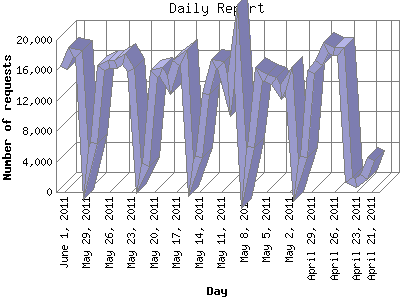

The Daily Report identifies the activity for each day within the reporting period. Remember that one page hit can result in several server requests as the images for each page are loaded.

| Day | Number of requests | Number of page requests | |
|---|---|---|---|
| 1. | April 21, 2011 | 4,343 | 493 |
| 2. | April 22, 2011 | 2,007 | 274 |
| 3. | April 23, 2011 | 1,219 | 168 |
| 4. | April 24, 2011 | 1,577 | 246 |
| 5. | April 25, 2011 | 18,498 | 1,538 |
| 6. | April 26, 2011 | 18,608 | 1,614 |
| 7. | April 27, 2011 | 18,972 | 1,534 |
| 8. | April 28, 2011 | 16,950 | 1,367 |
| 9. | April 29, 2011 | 15,807 | 1,248 |
| 10. | April 30, 2011 | 4,624 | 401 |
| 11. | May 1, 2011 | 1,420 | 156 |
| 12. | May 2, 2011 | 14,857 | 1,163 |
| 13. | May 3, 2011 | 13,139 | 1,235 |
| 14. | May 4, 2011 | 14,569 | 1,251 |
| 15. | May 5, 2011 | 15,038 | 1,165 |
| 16. | May 6, 2011 | 15,516 | 1,246 |
| 17. | May 7, 2011 | 5,891 | 551 |
| 18. | May 8, 2011 | 1,662 | 206 |
| 19. | May 9, 2011 | 19,281 | 1,578 |
| 20. | May 10, 2011 | 12,632 | 1,132 |
| 21. | May 11, 2011 | 16,716 | 1,336 |
| 22. | May 12, 2011 | 16,842 | 1,397 |
| 23. | May 13, 2011 | 12,837 | 948 |
| 24. | May 14, 2011 | 4,607 | 370 |
| 25. | May 15, 2011 | 1,859 | 212 |
| 26. | May 16, 2011 | 17,738 | 1,598 |
| 27. | May 17, 2011 | 16,925 | 1,384 |
| 28. | May 18, 2011 | 14,067 | 1,103 |
| 29. | May 19, 2011 | 15,825 | 1,318 |
| 30. | May 20, 2011 | 15,482 | 1,291 |
| 31. | May 21, 2011 | 3,494 | 347 |
| 32. | May 22, 2011 | 1,702 | 185 |
| 33. | May 23, 2011 | 16,097 | 1,308 |
| 34. | May 24, 2011 | 17,521 | 1,632 |
| 35. | May 25, 2011 | 16,857 | 1,382 |
| 36. | May 26, 2011 | 16,903 | 1,207 |
| 37. | May 27, 2011 | 16,275 | 1,376 |
| 38. | May 28, 2011 | 6,510 | 561 |
| 39. | May 29, 2011 | 2,334 | 251 |
| 40. | May 30, 2011 | 18,171 | 1,327 |
| 41. | May 31, 2011 | 18,401 | 1,412 |
| 42. | June 1, 2011 | 16,377 | 1,289 |
Most active day March 3, 2011 : 1,808 pages sent. 19,281 requests handled.
Daily average: 995 pages sent. 11,908 requests handled.
This report was generated on June 2, 2011 17:00.
Report time frame April 5, 2010 00:03 to June 1, 2011 23:59.
| Web statistics report produced by: analog 6.0 / Report Magic 2.21 |